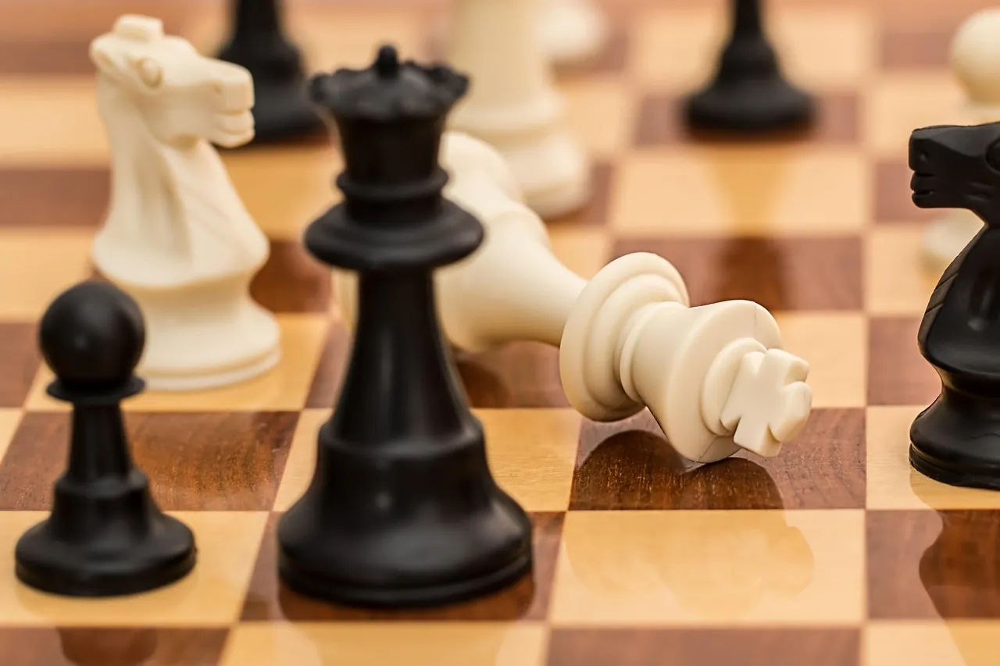
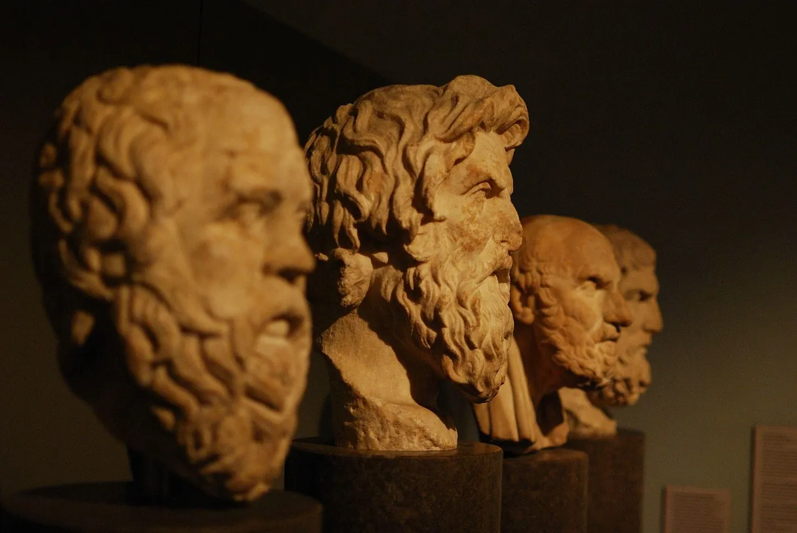
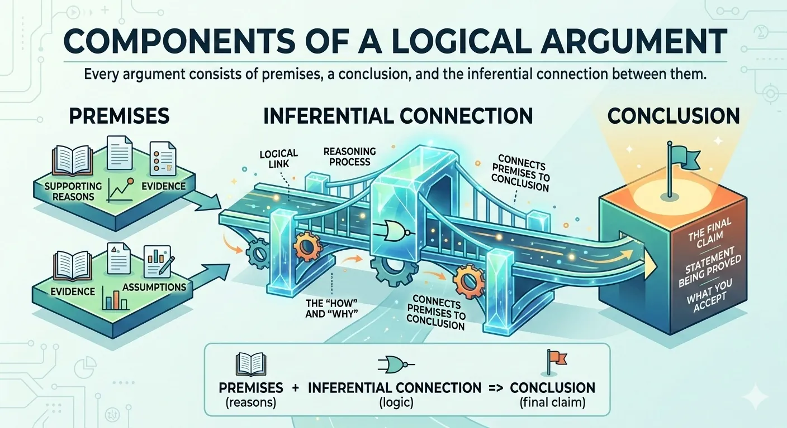
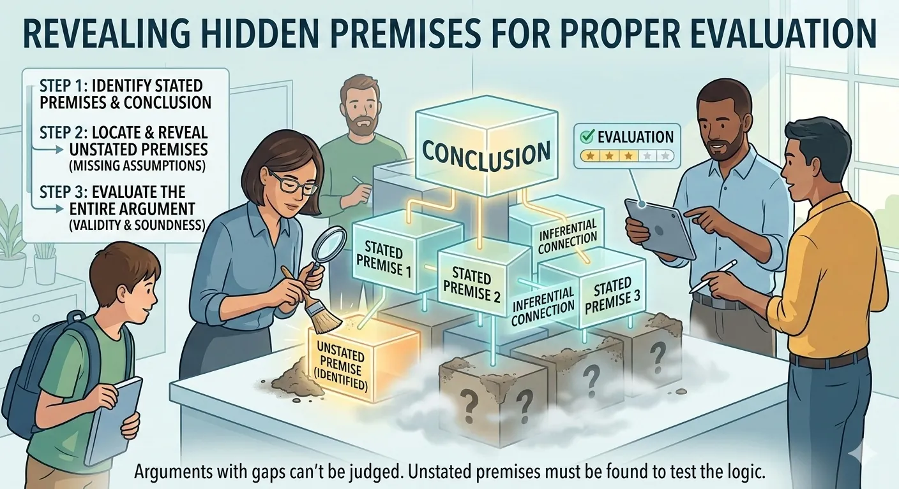

We use cookies to enhance your browsing experience, serve personalized content, and analyze our traffic.
By clicking "Accept All", you consent to our use of cookies. See our
Privacy Policy
for more information.
Logic & Critical Thinking Series Part 1: Introduction to Logic
January 25, 2026Wasil Zafar20 min read
Master the fundamentals of logic and critical thinking. Learn what logic is, why it matters, and how to think more clearly and rationally. This comprehensive guide will transform how you evaluate arguments, make decisions, and navigate complex information.
Series Overview: This is Part 1 of our 6-part Logic & Critical Thinking Series. We'll cover everything from fundamental concepts to real-world applications, giving you the intellectual tools to think more clearly, argue more effectively, and defend yourself against manipulation.
Logic is the study of correct reasoning. It provides the principles and methods for distinguishing good arguments from bad ones, valid inferences from invalid ones, and reliable evidence from unreliable evidence.
At its core, logic asks: What makes an argument good? Not persuasive—many terrible arguments are persuasive. Not popular—many popular beliefs are poorly reasoned. But good in the sense of being rationally justified, with conclusions that genuinely follow from premises.
Key Insight: Logic isn't about winning arguments—it's about seeking truth and understanding reality more clearly. The goal is not to be "right" but to reason well.
In this comprehensive guide, we'll explore what logic means, why it matters for everyday life, and how to begin thinking more critically. By the end of this series, you'll have the intellectual tools to evaluate claims, construct sound arguments, and protect yourself from manipulation and misinformation.

Logic provides the principles for distinguishing good arguments from bad ones across formal and informal domains
Why Logic Matters
You might think logic is only for philosophers, mathematicians, or computer scientists. In reality, you use logic every day—you just might not be doing it well.
Consider these everyday scenarios:
Reading the news: Is this article presenting evidence fairly, or using emotional manipulation?
Making decisions: Should you take this job offer? What factors actually matter?
Evaluating claims: Your friend says a new supplement changed their life. Should you try it?
Having disagreements: Are you actually addressing your partner's concerns, or talking past each other?
Voting: Is this politician's argument coherent, or just appealing to your emotions?
In each case, better logical thinking leads to better outcomes. Poor reasoning, by contrast, leads to bad decisions, wasted resources, damaged relationships, and susceptibility to manipulation.
The Cost of Poor Reasoning
Real-World Impact
Poor logical thinking contributes to:
Financial losses from scams, bad investments, and impulsive decisions
Health risks from following unproven treatments or ignoring evidence-based medicine
Relationship damage from misunderstandings and unfair arguments
Political manipulation through propaganda and misleading rhetoric
Professional setbacks from flawed analysis and decision-making
Logic isn't just an academic exercise—it's a survival skill for navigating the modern information landscape.
A Brief History of Logic
Logic has been refined over millennia, with each era contributing new tools and insights.
Ancient Foundations (384-322 BCE)
Aristotle is considered the "father of logic." His work in the Organon established the systematic study of reasoning. He developed:
Syllogistic logic: The formal analysis of deductive arguments with categorical propositions
The law of non-contradiction: Something cannot both be and not be at the same time
The law of excluded middle: Every proposition is either true or false
Fallacy identification: Early cataloging of reasoning errors
Aristotle's logic dominated Western thought for nearly two thousand years—an extraordinary intellectual achievement.

Key milestones in the history of logical thought from ancient Greece to contemporary logic
Medieval Developments (500-1500 CE)
Medieval scholars, both in the Islamic world and Christian Europe, preserved and extended Aristotelian logic:
Al-Farabi and Avicenna translated and commented on Aristotle, adding new insights
Thomas Aquinas integrated logic with theology
William of Ockham contributed "Ockham's Razor"—the principle of parsimony
Scholastic logicians developed sophisticated theories of supposition and consequence
Modern Symbolic Logic (1847-1931)
The 19th and early 20th centuries saw a revolution in logic:
George Boole (1847) created Boolean algebra, the mathematical foundation of digital computing
Bertrand Russell and Alfred North Whitehead (1910-1913) attempted to derive all mathematics from logic in Principia Mathematica
Kurt Gödel (1931) proved that any sufficiently powerful logical system contains truths it cannot prove—his famous incompleteness theorems
Contemporary Logic (1950-Present)
Modern logic has expanded into numerous specialized fields:
Modal logic: Reasoning about necessity, possibility, and obligation
Fuzzy logic: Handling degrees of truth rather than strict true/false
Paraconsistent logic: Tolerating contradictions without explosion
Computational logic: The foundation of artificial intelligence and programming
Branches of Logic
Logic encompasses several major branches, each with distinct focuses and applications.
Formal vs. Informal Logic
Formal Logic
Symbolic & Mathematical
Formal logic uses symbolic notation to study argument structure with mathematical precision. It abstracts away from specific content to focus on logical form.
Example: Instead of "All humans are mortal," formal logic writes: ?x(Human(x) ? Mortal(x))
Limitations: Many real-world arguments don't translate cleanly into formal systems
Informal Logic
Natural Language
Informal logic analyzes arguments as they actually appear in everyday discourse—in natural language, with implicit premises and contextual meaning.
Example: Analyzing a political speech, newspaper editorial, or dinner-table debate
Strengths: Directly applicable to real-world reasoning
Limitations: Less precise, more room for interpretation
This series focuses primarily on informal logic and critical thinking—the skills you need to reason well in everyday life. However, we'll touch on formal concepts where they illuminate important principles.
Predicate Logic: Adds quantifiers (all, some) and predicates to express richer claims
Modal Logic: Incorporates necessity (?) and possibility (?) operators
Deontic Logic: Formalizes obligation, permission, and prohibition
Epistemic Logic: Handles knowledge and belief
Why Multiple Systems? Different logical systems capture different aspects of reasoning. Classical logic works well for mathematics but struggles with vagueness, uncertainty, and normative claims. Specialized logics fill these gaps.
Understanding Arguments
In logic, an argument isn't a heated disagreement—it's a structured set of statements where some (the premises) are offered as reasons to believe another (the conclusion).
Definition: An argument is a set of statements in which one or more statements (premises) are offered as support or evidence for another statement (the conclusion).
Understanding this structure is the foundation of logical analysis. Before you can evaluate whether an argument is good or bad, you need to identify its parts.

Every argument consists of premises, a conclusion, and the inferential connection between them
The Structure of Arguments
Every argument has three essential components:
Argument Components
Core Structure
1. Premises - The statements offered as evidence or reasons. They're the "because" part.
2. Conclusion - The statement being argued for. It's the "therefore" part.
3. Inference - The logical connection between premises and conclusion. This is what makes it an argument rather than just a list of claims.
Example of a simple argument:
Premise 1: All mammals have hearts.
Premise 2: Dogs are mammals.
Conclusion: Therefore, dogs have hearts.
This is a valid argument—if the premises are true, the conclusion must be true. The conclusion follows necessarily from the premises.
Identifying Premises & Conclusions
In everyday discourse, arguments rarely come neatly labeled. You need to reconstruct them. Look for indicator words:
Premise Indicators
Because
Since
Given that
For
As
Considering that
The reason is that
After all
Conclusion Indicators
Therefore
Thus
Hence
So
Consequently
It follows that
This shows that
We can conclude that
Practice example:
"We should invest in renewable energy because fossil fuels are running out and since climate change threatens our future."
Analysis:
Premise 1: Fossil fuels are running out
Premise 2: Climate change threatens our future
Conclusion: We should invest in renewable energy
Hidden (Implicit) Premises
Many arguments contain unstated premises that the speaker assumes. Identifying these is crucial for evaluation.
"You should trust Dr. Smith's medical advice—she went to Harvard."
Stated premise: Dr. Smith went to Harvard.
Conclusion: You should trust her medical advice.
Hidden premise: Harvard graduates give trustworthy medical advice.
Once you expose the hidden premise, you can evaluate whether it's actually true. Sometimes hidden premises are reasonable; sometimes they're the weakest link in the argument.

Many arguments rely on unstated premises that must be identified before the argument can be properly evaluated
Validity vs. Soundness
These are the two most important concepts in evaluating deductive arguments.
Validity
Logical Form
An argument is valid if and only if it's impossible for the premises to be true while the conclusion is false. Validity is about the logical structure—the form—not the actual truth of the statements.
Valid but untrue example:
Premise: All fish can fly.
Premise: Salmon are fish.
Conclusion: Therefore, salmon can fly.
This argument is valid—the conclusion follows from the premises—but it's based on a false premise.
Soundness
The Gold Standard
An argument is sound if and only if (1) it's valid AND (2) all its premises are actually true.
Sound example:
Premise: All humans are mortal. (TRUE)
Premise: Socrates is human. (TRUE)
Conclusion: Therefore, Socrates is mortal. (MUST BE TRUE)
A sound argument guarantees a true conclusion. This is what we aim for.
Critical Distinction: An argument can be valid with false premises and a false conclusion. But a sound argument must have true premises—and therefore a true conclusion. Validity = good structure. Soundness = good structure + true content.
Why This Matters
When someone presents an argument, you can challenge it in two ways:
Attack the structure: "Even if your premises were true, your conclusion doesn't follow" (the argument is invalid)
Attack the premises: "Your logic is fine, but premise 2 is false" (the argument is unsound)
Separating these critiques makes your analysis—and your counter-arguments—much more precise.
Critical Thinking Fundamentals
Critical thinking is the disciplined process of actively analyzing, synthesizing, and evaluating information to guide belief and action. It goes beyond logic to include dispositions, habits, and practical judgment.
Definition: Critical thinking is reflective and reasonable thinking that is focused on deciding what to believe or do. — Robert Ennis
While logic provides the formal rules of valid inference, critical thinking asks: How do I actually apply these rules in messy, real-world situations?
Logic provides the rules of correct inference while critical thinking applies those rules in real-world contexts
Logic vs. Critical Thinking
The Relationship
Tools vs. Practice
Logic is like grammar—the rules of correct reasoning.
Critical thinking is like good writing—using those rules skillfully in context.
You can know all the logical rules and still think poorly if you:
Don't apply them consistently
Let biases override your analysis
Fail to seek out relevant information
Accept claims without appropriate scrutiny
Core Critical Thinking Skills
Critical thinking involves several interconnected abilities:
1. Analysis
Breaking down complex information into its component parts. What are the key claims? What evidence is offered? What assumptions are made?
Practice: When reading an article, ask: "What is the main claim? What supports it? What's left unsaid?"
2. Evaluation
Assessing the credibility and strength of claims and arguments. Is the evidence reliable? Is the reasoning valid? Are the sources trustworthy?
Practice: For any claim, ask: "How do they know this? What would change my mind?"
3. Inference
Drawing reasonable conclusions from available evidence. What follows from what we know? What's the most likely explanation?
Practice: When facing uncertainty, ask: "Given this evidence, what's the most reasonable conclusion?"
4. Explanation
Clearly articulating your reasoning to others. Can you state your premises, show how they support your conclusion, and justify your methods?
Practice: Try explaining your reasoning out loud. If you can't, you may not fully understand it yourself.
5. Self-Regulation
Monitoring and correcting your own thinking. Are you being fair? Are you missing something? Would you accept this reasoning from someone you disagree with?
Practice: Actively seek out information that challenges your views. Notice when you resist doing so.
The Critical Thinking Mindset
Skills alone aren't enough. Critical thinkers also cultivate certain intellectual dispositions:
Intellectual humility: Recognizing the limits of your knowledge and being open to correction
Intellectual courage: Willingness to examine unpopular ideas and question your own beliefs
Intellectual empathy: Ability to understand perspectives you disagree with
Intellectual integrity: Holding yourself to the same standards you apply to others
Intellectual perseverance: Continuing to think carefully even when it's difficult
Confidence in reason: Trust that careful reasoning leads to better outcomes
Fair-mindedness: Treating all viewpoints by the same standards, regardless of your preferences
The Ultimate Test: Would you accept this argument if it came from someone you disagree with politically? If not, you may be evaluating the source rather than the reasoning.
Barriers to Clear Thinking
Even smart, educated people make systematic reasoning errors. Understanding these barriers is the first step to overcoming them.
Cognitive Biases
Our brains use mental shortcuts (heuristics) that often work but can systematically mislead us:
Confirmation bias: Seeking information that confirms what we already believe
Availability heuristic: Judging likelihood by how easily examples come to mind
Anchoring: Over-relying on the first piece of information encountered
Dunning-Kruger effect: The less you know, the more confident you tend to be
Sunk cost fallacy: Continuing a course of action because of past investment
Motivated reasoning: Reasoning toward conclusions we want to be true
Emotions are important—they signal what matters to us. But they can interfere with reasoning:
Fear can make us overestimate risks and underestimate benefits
Anger can make us more punitive and less fair
Tribal loyalty can make us defend "our side" regardless of evidence
Disgust can make us morally condemn things that aren't actually harmful
The goal isn't to eliminate emotions—that's neither possible nor desirable. The goal is to notice when emotions are driving your conclusions and check whether your reasoning holds up independently.
Social Pressures
Conformity: Agreeing with the group even when you have doubts
Authority bias: Accepting claims because of who said them, not the evidence
In-group bias: Favoring arguments from "our side"
Social proof: "Everyone believes this, so it must be true"
Information Environment
Information overload: Too much data to process carefully
Filter bubbles: Algorithms showing you what you already agree with
Misinformation: False information spreading faster than corrections
Complexity: Many important issues are genuinely hard to understand
Defense: The antidote to these barriers is awareness plus deliberate practice. You can't eliminate biases, but you can learn to recognize and compensate for them.
Next Steps in the Series
You now have the foundational concepts of logic and critical thinking:
? What logic is and why it matters
? The history and branches of logical study
? How to identify arguments, premises, and conclusions
? The crucial distinction between validity and soundness
? Core critical thinking skills and dispositions
? Common barriers to clear thinking
In the upcoming parts, we'll dive deeper into specific types of reasoning and their applications:
Your Learning Path
5 More Parts
Part 2: Deductive Reasoning - Master syllogisms, learn to construct airtight arguments, and understand formal logic structures
Part 3: Inductive Reasoning - Learn to reason from evidence, understand probability, and apply the scientific method
Part 4: Logical Fallacies - Identify 30+ common reasoning errors and cognitive biases that derail thinking
Part 5: Argument Analysis - Systematic methods for evaluating arguments, identifying hidden assumptions, and assessing evidence
Want to continue developing your logical thinking skills? Here are some recommended resources:
Books
"Thinking, Fast and Slow" by Daniel Kahneman — The definitive work on cognitive biases and how our minds actually work
"The Art of Thinking Clearly" by Rolf Dobelli — 99 short chapters on common thinking errors
"A Rulebook for Arguments" by Anthony Weston — Concise, practical guide to constructing good arguments
"Being Logical" by D.Q. McInerny — Clear introduction to the principles of good reasoning
"Attacking Faulty Reasoning" by T. Edward Damer — Comprehensive guide to logical fallacies
Practice Tips
Argument mapping: When you encounter an argument, try diagramming its structure with premises pointing to conclusions
Devil's advocate: Regularly argue the opposite of what you believe to stress-test your reasoning
Explain to others: Teaching concepts forces you to understand them deeply
Seek disagreement: Deliberately read thoughtful people who disagree with you
Notice your reactions: When you feel strongly about something, that's exactly when to slow down and check your reasoning
Remember: Critical thinking is a skill, not just knowledge. Like any skill, it improves with deliberate practice. Don't just read about logic—apply it actively to the arguments and claims you encounter every day.
Continue the Series
Part 2: Deductive Reasoning
Master the art of deductive logic—syllogisms, validity, soundness, and how to construct airtight arguments.